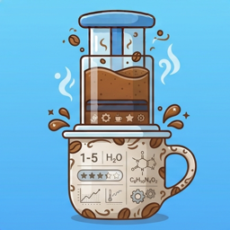

Privacy PolicyBrewdex · Effective 11 October 2026
Information you enter
The coffees, recipes, tasting results, experiments and taster names you add are stored locally on your iPhone using Apple's on-device storage. This information is never sent to us or to any third party.
Data we collect
None. Brewdex has no account system, no analytics, no advertising and no tracking, and it does not connect to any server operated by us.
Third parties
Brewdex does not include third-party SDKs for analytics, advertising or tracking. If you choose to back up your iPhone with iCloud, Apple may include app data in that backup under Apple's Privacy Policy.
Deleting your data
Deleting Brewdex from your iPhone permanently removes all of its data.
Children
Brewdex does not knowingly collect information from anyone, including children under 13.
Changes
If this policy changes, the updated version will be posted on this page with a new effective date.
Contact
Questions about this policy? Open an issue on GitHub.